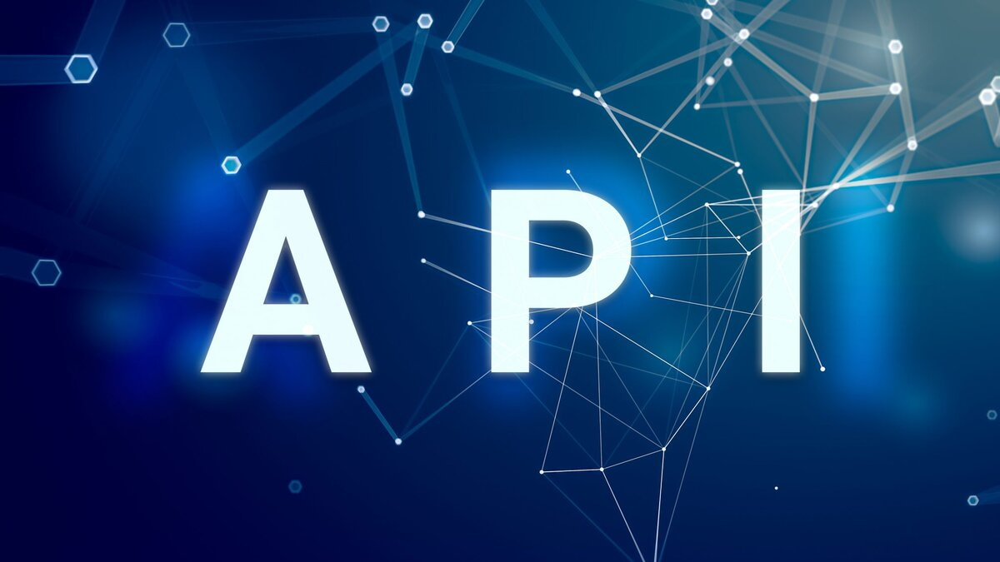

Рендеринг (отрисовка)
Рендиринг (от англ. Rendering) – процесс преобразования трехмерной модели или сцены из компьютерной модели или сцены из компьютерной программы в изображение, которое увидит пользователь. Для выполнения рендеринга используются различные программные обеспечения и инструменты, включая специальные API (Application Programming Interface).
Что такое API и его виды
API (Application Programming Interface) – графический интерфейс программ - предоставляeт разработчикам аппаратного и программного обеспечения средства создания драйверов и программ, работающих быстрее на большом числе платформ. Существует несколько видов графических интерфейсов.
Opengl
OpenGL (Open Graphics Library) – это открытый стандартный API для создания 2D и 3D графики. Он широко используется в игровой разработке, визуализации данных, компьютерном моделировании и других областях. OpenGL предоставляет набор функций для работы с графическими объектами, текстурами, шейдерами и другими элементами графического процесса. Он поддерживается на различных платформах, включая Windows, macOS и Linux.
DirectX
DirectX – это набор API, разработанных Microsoft, для работы с графикой, звуком и вводом-выводом в Windows-приложениях. DirectX включает в себя несколько компонентов, включая Direct3D для 3D-графики, Direct2D для 2D-графики, DirectSound для звука и другие. DirectX обеспечивает высокую производительность и низкий уровень аппаратной абстракции, что делает его популярным выбором для игровой разработки на платформе Windows.
WebGL
WebGL (Web Graphics Library) – это API для создания 3D-графики веб-приложениями. Он основан на OpenGL ES и позволяет использовать графические возможности браузера для создания интерактивных 3D-сцен и визуализаций. WebGL поддерживается во многих современных браузерах и позволяет создавать веб-приложения с высококачественной графикой без необходимости установки дополнительных плагинов.
Vulkan

Vulkan – это открытый стандартный API для работы с графикой, разработанный Khronos Group. Он предоставляет низкоуровневый доступ к графическому аппаратному обеспечению и позволяет разработчикам полностью контролировать процесс рендеринга. Vulkan обеспечивает высокую производительность и масштабируемость, что делает его популярным выбором для игровой разработки и других приложений, требующих высокой производительности графики.